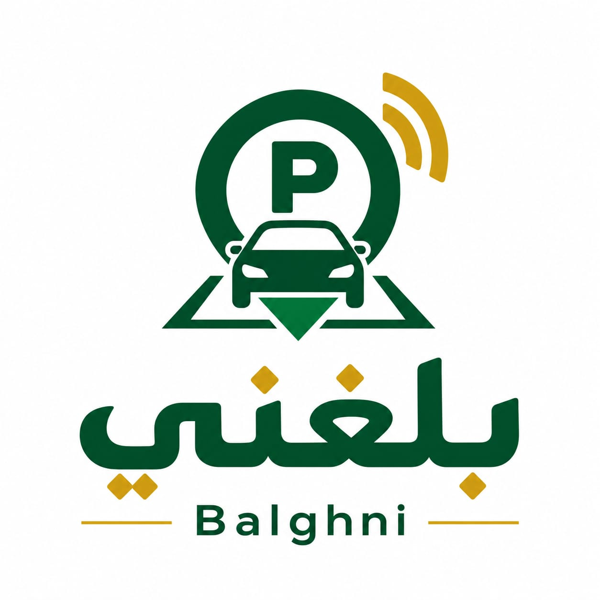

01◈
منتجات رقمية
حلول تقنية متخصصة تُبنى لمعالجة مشكلة واضحة، ويمكن تقديمها لأكثر من منشأة وفق نموذج استخدام مناسب.
تعرّف على المنتجات ↗أطوّر منتجات تقنية وأنظمة مخصصة ومواقع إلكترونية تساعد أصحاب الأعمال والفرق على تبسيط العمل ومعالجة التحديات اليومية.
ما الذي يستهلك الوقت أو يعرقل العمل؟
نختار أبسط طريقة تحقق الهدف.
نطوّر نسخة قابلة للاستخدام والتحسين.
لا أبدأ بالتقنية ثم أبحث لها عن استخدام. أبدأ بالمشكلة، وبعد فهمها أحدد ما إذا كان الأنسب منتجًا جاهزًا أو نظامًا مخصصًا أو موقعًا يخدم الهدف.
حلول تقنية متخصصة تُبنى لمعالجة مشكلة واضحة، ويمكن تقديمها لأكثر من منشأة وفق نموذج استخدام مناسب.
تعرّف على المنتجات ↗تحليل إجراءات العمل وتصميم نظام يتوافق مع احتياج المنشأة، ومستخدميها، وصلاحياتها.
ناقش احتياجك ↗مواقع تعريفية وبوابات رقمية واضحة وسريعة، توصل قيمة النشاط وتسهّل على الزائر اتخاذ الخطوة المناسبة.
شاهد النماذج ↗
BALGHNIتصور منتج رقمي يساعد المنشآت على تنظيم بلاغات المركبات التي تعيق المواقف، وإيصال التنبيه لصاحب المركبة دون إظهار بيانات الاتصال الخاصة به.
كل نموذج يعرض فكرة وهوية مستقلة، وبجانبها شعار Programmer Sammer بوصفه هوية المطوّر. النماذج الحالية تجريبية وليست أعمالًا منسوبة إلى عملاء.
عرض القائمة والهوية والمعلومات وطرق التواصل في تجربة متوافقة مع الجوال.
عرض المنتجات والخدمات والمعلومات الأساسية بطريقة منظمة.
واجهة تبرز القائمة والهوية وتجربة الزائر.
هذه نماذج تصميمية داخلية لعرض المهارات، وليست مشاريع عملاء. عند إضافة أعمال منفذة لعميل، لن تُعرض هويته أو تفاصيله إلا بإذنه.
أحدد معك المشكلة والنتيجة المطلوبة قبل اختيار التقنية، ثم نتفق على نطاق العمل والتسليمات والتكلفة.
أستمع لاحتياجك وأراجع طريقة العمل الحالية.
أضع نطاقًا واضحًا وأقترح الحل المناسب.
أبني الحل وأختبره وفق المتطلبات المتفق عليها.
أوضح طريقة الاستخدام وأتابع التحسين وفق الاتفاق.
قبل بدء أي مشروع، تتضح المتطلبات والتكلفة وحقوق الاستخدام وما يشمله التسليم.
Programmer Sammer هي هويتي المهنية كمطور ومهتم ببناء المنتجات الرقمية. أعمل على فهم المشكلات العملية، وتطوير مواقع وأنظمة تساعد أصحاب الأعمال والفرق على إنجاز أعمالهم بصورة أوضح وأسهل.
أستقبل طلبات المشاريع من مختلف الأماكن، ويكون التواصل والتنفيذ عن بُعد وفق طبيعة كل مشروع.
إجابات مباشرة تساعدك على معرفة طريقة العمل وما يمكن توقعه.
المساران متاحان: منتجات رقمية متخصصة، وأنظمة تُطوّر وفق احتياج المنشأة ونطاق عمل متفق عليه.
بلّغني معروض كمنتج قيد التحقق والتطوير. لن أعلن إتاحة الاشتراك أو التشغيل التجاري قبل اكتمال الاختبارات والترتيبات اللازمة.
نعم. يمكن مناقشة المتطلبات ومراجعة النماذج وتسليم المخرجات إلكترونيًا، وفق طبيعة المشروع.
نعم، تشمل الخدمات مواقع تعريفية وصفحات أعمال وبوابات إلكترونية حسب الحاجة.
أرسل نبذة عن نشاطك واحتياجك، وبعد مراجعة المتطلبات أجهز نطاق عمل وتكلفة مبدئية.
يتم توضيح المطلوب والمخرجات والتعديلات والمدة والتكلفة وحقوق الاستخدام قبل البدء، بما يناسب طبيعة المشروع.
أخبرني بما تريد تحسينه أو بناؤه. لا تحتاج إلى معرفة الحل التقني مسبقًا؛ اشرح احتياجك وسأساعدك في تحديد الخطوة المناسبة.
مناقشة أولية واضحة، ثم نطاق عمل قبل أي التزام بالتنفيذ.